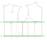

這一節，我們談 a、b、c 三根褶子。前面說過它們各自的角色：a 的腰褶會跟胸褶連在一起（成為公主線）；b 收的是側腰前面的地方（腹側）；c 則是把側面再收掉一點點。
開始收褶子之前，要先釐清一件事——這件衣服，是要貼身，還是要寬鬆？
要寬鬆，那你多半是在「擴」褶子——擴、擴、擴，擴到最後，可能只需要稍稍修一點腰身就好。這條路，第四節的胸褶增量已經看過做法了。
要很貼身，才會進到這一節的正題：a、b、c 這三根褶子，大概要收多少、怎麼收。
貼身的路線，我們以「腰甲」為例。看圖 2-10：圖上有兩條綠色的線——上面那條是胸圍線（BL），下面那條是腰圍線（WL）。腰甲，就是這兩條綠線之間的那一圈。
可以看到，原型版上所有的腰褶，全數長在這一段裡：前片的 a、b、c，加上後片的 d、e、f（有些褶尖會再往上長一點，像 d）。要做一件貼身的腰甲，便是把這兩條綠線之間的褶子全部收起來——每一根都收，這一圈就會緊緊貼著身體，腰身的立體感全數浮現。

那能不能再往下修、切得更細？可以。終究只是褶子怎麼轉移、怎麼修的事——第一章轉褶的原理，到這裡仍是同一套。
下一節 第七節：側邊——c 那條斜線 →